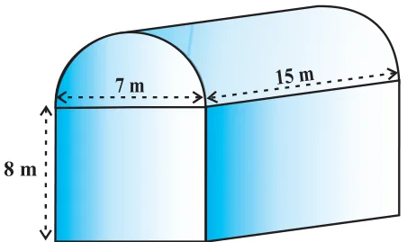
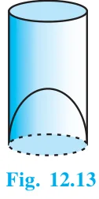
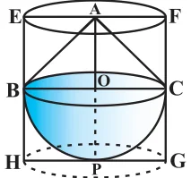

In the previous section, we have discussed how to find the surface area of solids made up of a combination of two basic solids. Here, we shall see how to calculate their volumes. It may be noted that in calculating the surface area, we have not added the surface areas of the two constituents, because some part of the surface area disappeared in the process of joining them. However, this will not be the case when we calculate the volume. The volume of the solid formed by joining two basic solids will actually be the sum of the volumes of the constituents, as we see in the examples below.
Example 5 : Shanta runs an industry in a shed which is in the shape of a cuboid surmounted by a half cylinder (see Fig. 12.12). If the base of the shed is of dimension \(7 m \times 15 m\), and the height of the cuboidal portion is 8 m, find the volume of air that the shed can hold. Further, suppose the machinery in the shed occupies a total space of \(300 m^{3}\), and there are 20 workers, each of whom occupy about \(0.08 m^{3}\) space on an average. Then, how much air is in the

shed? (Take \(\pi = \frac{22}{7}\) )
Solution : The volume of air inside the shed (when there are no people or machinery) is given by the volume of air inside the cuboid and inside the half cylinder, taken together.
Now, the length, breadth and height of the cuboid are 15 m, 7 m and 8 m, respectively. Also, the diameter of the half cylinder is 7 m and its height is 15 m.
So, the required volume = volume of the cuboid \(+ \frac{1}{2}\) volume of the cylinder
\(= 15 \times 7 \times 8 + \frac{1}{2} \times \frac{22}{7} \times \frac{7}{2} \times \frac{7}{2} \times 15 m^{3} = 1128.75 m^{3}\)
Next, the total space occupied by the machinery \(= 300 m^{3}\) And the total space occupied by the workers \(= 20 \times 0.08 m^{3} = 1.6 m^{3}\) Therefore, the volume of the air, when there are machinery and workers
\(= 1128.75 - (300.00 + 1.60) = 827.15 m^{3}\)
Example 6 : A juice seller was serving his customers using glasses as shown in Fig. 12.13. The inner diameter of the cylindrical glass was 5 cm, but the bottom of the glass had a hemispherical raised portion which reduced the capacity of the glass. If the height of a glass was 10 cm, find the apparent capacity of the glass and its actual capacity. (Use \(\pi = 3.14.)\) Solution : Since the inner diameter of the glass \(= 5\) cm and height \(= 10\) cm, the apparent capacity of the glass \(= \pi r^{2}h\)

\(= 3.14 \times 2.5 \times 2.5 \times 10 cm^{3} = 196.25 cm^{3}\)
But the actual capacity of the glass is less by the volume of the hemisphere at the base of the glass.
i.e., it is less by \(\frac{2}{3} \pi r^{3} = \frac{2}{3} \times 3.14 \times 2.5 \times 2.5 \times 2.5 cm^{3} = 32.71 cm^{3}\) So, the actual capacity of the glass = apparent capacity of glass - volume of the hemisphere
\(= (196.25 - 32.71) cm^{3}\)
\(= 163.54 cm^{3}\)
Example 7 : A solid toy is in the form of a hemisphere surmounted by a right circular cone. The height of the cone is 2 cm and the diameter of the base is 4 cm. Determine the volume of the toy. If a right circular cylinder circumscribes the toy, find the difference of the volumes of the cylinder and the toy. (Take \(\pi = 3.14)\) Fig. 12.14 Solution : Let BPC be the hemisphere and ABC be the cone standing on the base of the hemisphere (see Fig. 12.14). The radius BO of the hemisphere (as well as of the cone) \(= \frac{1}{2} \times 4\) cm \(= 2\) cm. So, volume of the toy \(= \frac{2}{3} \pi r^{3} + \frac{1}{3} \pi r^{2}h\)

\(= \frac{2}{3} \times 3.14 \times (2)^{3} + \frac{1}{3} \times 3.14 \times (2)^{2} \times 2 cm^{3} = 25.12 cm^{3}\)
Now, let the right circular cylinder EFGH circumscribe the given solid. The radius of the base of the right circular cylinder \(= HP = BO = 2\) cm, and its height is
\(EH = AO + OP = (2 + 2)\) cm \(= 4\) cm
So, the volume required = volume of the right circular cylinder - volume of the toy
\(= (3.14 \times 2^{2} \times 4 - 25.12) cm^{3} = 25.12 cm^{3}\)